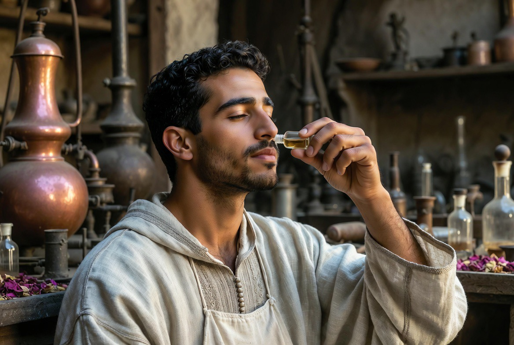
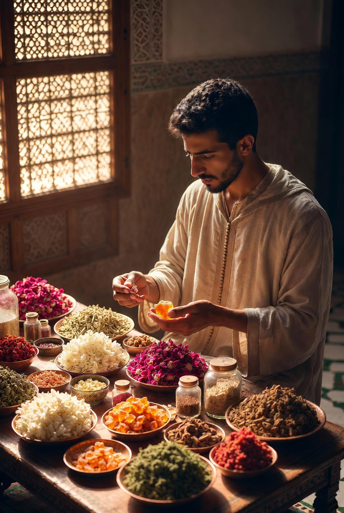

Parfums & essences
L'art marocain des senteurs devient discipline de formation. Le nez, la main, la mémoire — de la rose de Kelaât M'Gouna à l'alambic, un métier qui s'apprend comme les autres, geste après geste.

Au Riad, le parfum n'est pas un accessoire de luxe : c'est un métier de précision. Reconnaître une essence, doser un assemblage, connaître la plante avant l'huile — le même sérieux que pour le zellige ou la calligraphie.
La formation unit trois gestes : le nez qui distingue, la main qui distille, la mémoire qui retient. On apprend d'abord à sentir, puis à faire.
إِذَا قَامَتَا تَضَوَّعَ الْمِسْكُ مِنْهُمَا
نَسِيمَ الصَّبَا جَاءَتْ بِرَيَّا الْقَرَنْفُلِ
« Quand elles se levaient, le musc s'exhalait d'elles — comme la brise d'orient chargée du parfum du clou de girofle. »
— Imruʾ al-Qays, Muʿallaqa

Le nez
Reconnaître, distinguer, mémoriser les essences. Avant toute composition, l'élève apprend à nommer ce qu'il sent — rose, oranger, jasmin, bois, résine.

Le geste
Distillation, assemblage, dosage. L'alambic — le mot vient de l'arabe al-inbīq (الإنبيق), lui-même hérité du grec ambix — les proportions, le temps de chauffe : la main apprend la patience de la transformation.

Les matières
Rose de Kelaât M'Gouna, fleur d'oranger, jasmin — connaître la plante avant l'essence. Le métier commence au jardin et au marché, pas seulement à l'atelier.
Les termes de cette page sont réunis dans le glossaire de la maison.